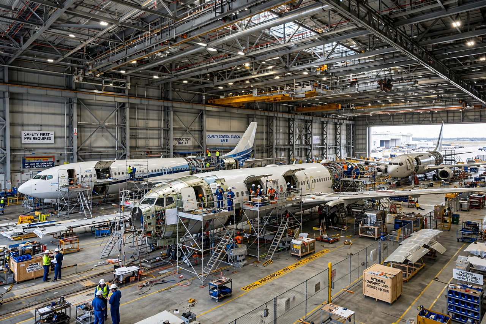

An aerospace manufacturer is a company or individual involved in the various aspects of designing, building, testing, selling and maintaining aircraft, aircraft parts, missiles, rockets and/or spacecraft. Aerospace is a high-technology industry that employs large numbers of skilled engineers, scientists and technicians, and whose products are among the most complex and heavily regulated in the world.

The industry is organised in tiers. At the top are prime contractors or original equipment manufacturers (OEMs) that design and integrate complete aircraft or spacecraft: for large airliners, the market is a duopoly of Airbus and Boeing, alongside regional manufacturers such as Embraer and ATR, and the state-backed Chinese manufacturer COMAC. Below them, engine manufacturers (GE Aerospace, Rolls-Royce, Pratt & Whitney, Safran) and thousands of systems and component suppliers form an extensive global supply chain.
Military aerospace is dominated by firms such as Lockheed Martin, RTX (Raytheon Technologies), Northrop Grumman, BAE Systems and Dassault Aviation. The space sector, traditionally led by government agencies and their contractors, has been reshaped by commercial firms such as SpaceX, which manufactures launch vehicles and spacecraft in-house.
Aircraft cannot be sold or operated commercially without type certification from regulators such as the U.S. Federal Aviation Administration and the European Union Aviation Safety Agency. Production rates for large airliners are typically a few dozen per month per model, and a new airliner programme costs tens of billions of dollars to develop, which explains the industry's consolidation from dozens of manufacturers in the early 20th century — founded by pioneers such as William E. Boeing — to a handful of global primes today.
See also: Airbus, Boeing, Aerospace engineering, Aircraft.